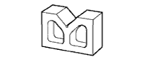

Propeller Shaft with Center Bearing Assembly (4WD) Preparation [Inspection]
 | 2046-08 | Dial Indicator (10mm) Supplied by Banzai Ltd. |
 | V-150B | V-block Supplied by Banzai Ltd. |
| TM-110 | Dial Indicator (10mm) Supplied by Iyasaka Co., Ltd. |
| VBB-150 | V-block Supplied by Iyasaka Co., Ltd. | |
 | MB-B | Magnetic Base Supplied by Banzai Ltd. and Iyasaka Co., Ltd. |